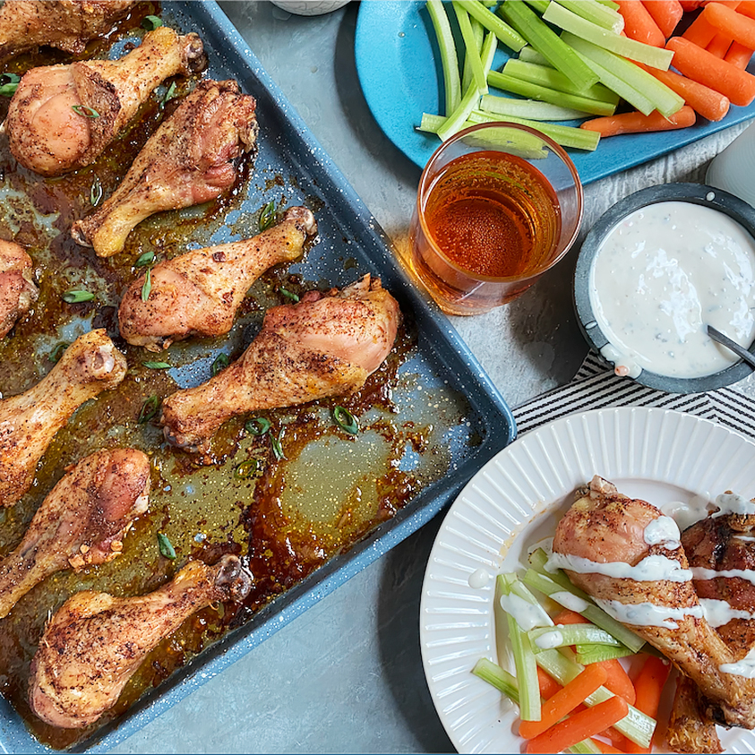

Baked wings

Ready, set... WINGS!!!
What is it about chicken wings? Why can't we resist them??
That is one of life's mysteries. Just to double-check this... Here's a
recipe for you.
Ingredients
- 3 tablespoons olive oil
- 3 cloves garlic, pressed
- 2 teaspoons chili powder
- 1 teaspoon garlic powder
- salt and ground black pepper to taste
- 10 chicken wings
Steps
- Step 1: Preheat the oven to 375 degrees F (190 degrees C)
- Step 2: Combine the olive oil, garlic, chili powder, garlic powder,
salt, and pepper in a large, resealable bag; seal and shake to combine.
Add the chicken wings; reseal and shake to coat. Arrange the
chicken wings on a baking sheet
- Step 3: Cook the wings in the preheated oven 1 hour, or
until crisp and cooked through